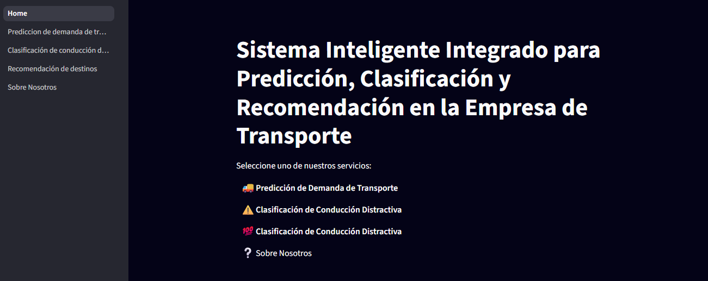

Trabajo 3: aplicaciones en sistemas de recomendación e imágenes
Redes Neuronales y Algoritmos Bioinspirados
Equipo:
- Juan José Correa Hurtado
- Jacobo Ochoa Ramírez
Profesor:
- Juan David Ospina Arango
Universidad Nacional de Colombia
Resumen ejecutivo
En el contexto actual, las empresas de transporte enfrentan desafíos crecientes relacionados con la eficiencia operativa, la seguridad vial y la satisfacción del usuario. Factores como la variabilidad en la demanda, los riesgos asociados a la conducción distraída y la necesidad de ofrecer experiencias personalizadas exigen soluciones tecnológicas avanzadas. Este proyecto propone el desarrollo de un sistema inteligente integrado basado en técnicas de aprendizaje profundo, con el objetivo de abordar tres problemáticas clave: la predicción de la demanda de transporte mediante series de tiempo, la clasificación automática de comportamientos distractores en conductores a partir de imágenes, y la recomendación personalizada de destinos de viaje para los usuarios.
La solución desarrollada es una aplicación web interactiva que integra tres módulos basados en modelos de aprendizaje profundo. Cada módulo responde directamente a una necesidad operativa de la empresa:
Predicción de demanda: utiliza un modelo de series de tiempo para anticipar la afluencia turística en distintos destinos, facilitando la planificación de recursos logísticos y humanos.
Clasificación de conducción distractiva: emplea modelos de visión por computadora para detectar automáticamente comportamientos riesgosos al volante a partir de imágenes, mejorando la seguridad operativa.
Recomendación personalizada de destinos: mediante sistemas híbridos de recomendación, sugiere destinos turísticos a los usuarios según su historial y preferencias, mejorando la experiencia del cliente.
Tecnologías utilizadas:
- Construcción de pagina web:
Streamlit - Modelo de series de tiempo:
Prophet - Clasificador de comportamientos peligrosos: Modelo de
Torchbasado en arquitectura vgg19 - Sistema recomendador:
Sklearn
Resultados:
- Modelo de series de tiempo:
- Leh Ladakh y Jaipur City : Excelente ajuste
- Taj Mahal y Goa Beaches : Ajuste moderado
- Kerala Backwaters : Ajuste deficiente
- Clasificador de comportamientos peligrosos:
- Exactitud promedio : 95%
- Sistema recomendador:
- Precisión promedio : 27.9%
- Recall promedio : 65.5%
Este estudio demuestra cómo la integración de modelos inteligentes permite tomar decisiones estratégicas basadas en datos reales, optimizando la operación, seguridad y experiencia del usuario en el sector transporte. La información obtenida puede aprovecharse comercialmente para personalizar servicios, detectar riesgos en la conducción, identificar oportunidades de mercado y diseñar campañas más efectivas, posicionando a las empresas con una ventaja competitiva clara.
Índices
Contenidos
Tablas
- Tabla 1. Métricas de rendimiento por destino
- Tabla 2. Reporte de clasificación
Gráficas
- Gráfica 1. Destinos populares
- Gráfica 2. Número de viajes por destino
- Gráfica 3. Predicción de demanda para Kerala Backwaters
- Gráfica 4. Proyección de demanda para los próximos 30 días
- Gráfica 5. Predicción vs Real para cada destino
- Gráfica 6. Componentes del modelo Prophet para Goa Beaches
- Gráfica 7. Componentes del modelo Prophet para Jaipur City
- Gráfica 8. Componentes del modelo Prophet para Kerala Backwaters
- Gráfica 9. Componentes del modelo Prophet para Leh Ladakh
- Gráfica 10. Componentes del modelo Prophet para Taj Mahal
- Gráfica 11. Pérdida y exactitud del modelo sin preentrenamiento
- Gráfica 12. Pérdida y exactitud del modelo con preentrenamiento
- Gráfica 13. Matriz de confusión del modelo de clasificación
Introducción
En el panorama actual, las empresas de transporte enfrentan desafíos cada vez más complejos relacionados con la eficiencia operativa, la seguridad vial y la satisfacción del usuario. La creciente variabilidad en la demanda de servicios, los riesgos asociados a la conducción distraída y la necesidad de ofrecer experiencias más personalizadas exigen soluciones tecnológicas avanzadas que permitan responder de forma ágil y efectiva a estas necesidades.
Este trabajo propone el desarrollo de un sistema inteligente integrado, basado en técnicas de aprendizaje profundo, que aborda de manera simultánea tres problemáticas clave: la predicción de la demanda de transporte mediante modelos de series de tiempo, la clasificación automática de comportamientos distractores en conductores a partir de imágenes, y la recomendación personalizada de destinos turísticos según las preferencias del usuario.
Durante el desarrollo del proyecto se logró articular y contextualizar estos tres ejes temáticos, inicialmente disímiles, de forma complementaria. El análisis conjunto de los datos permite generar información estratégica de alto valor tanto para empresas como para conductores. Disponer de un conocimiento detallado sobre las preferencias de viaje, destinos más frecuentados y su evolución a lo largo del tiempo, brinda herramientas clave para el diseño de rutas, la optimización de horarios y la planificación operativa.
Asimismo, el sistema facilita identificar patrones de comportamiento, tendencias emergentes o en decadencia, y conductas de riesgo en la conducción, elementos que pueden aprovecharse no solo para mejorar la oferta de servicios y la experiencia del usuario, sino también para implementar estrategias comerciales más efectivas y programas de capacitación para conductores enfocados en la seguridad y el valor cultural o histórico de los destinos.
Objetivos
Objetivo General
Desarrollar un sistema inteligente integrado basado en aprendizaje profundo que permita predecir la demanda de transporte, clasificar comportamientos distractores en conductores a partir de imágenes y generar recomendaciones personalizadas de destinos de viaje, con el fin de optimizar la eficiencia operativa, mejorar la seguridad vial y elevar la experiencia del usuario en una empresa de transporte.
Objetivos específicos
- Desarrollar un modelo de series de tiempo que utilice datos históricos para predecir la demanda de transporte en rutas específicas durante los próximos 30 días, facilitando una mejor planificación de recursos.
- Entrenar un modelo de clasificación de imágenes para identificar comportamientos distractores en los conductores, como el uso del teléfono móvil, con el fin de reducir riesgos de accidentes.
- Implementar un sistema de recomendación personalizado que sugiera destinos de viaje a los usuarios, utilizando información del historial de viajes y preferencias individuales.
- Diseñar una herramienta web interactiva que integre los tres módulos desarrollados, permitiendo la visualización de predicciones, la clasificación de imágenes y la generación de recomendaciones de manera accesible para los usuarios y administradores de la empresa.
- Documentar el proceso completo de desarrollo.
Desarrollo del proyecto
Punto 1: Análisis y Predicción de Demanda Turística
Revisión y Tratamiento del Dataset
Preparación Inicial de los Datos
Se consolidaron todos los datasets disponibles en uno solo para simplificar el análisis y garantizar la consistencia de los datos. Durante esta fase se realizó una revisión exhaustiva que incluyó la identificación de duplicados y valores nulos.
Como paso inicial del análisis exploratorio, se generó una visualización de los destinos más populares, lo que reveló que la base de datos contiene únicamente 5 destinos posibles.
Análisis de Usuarios y Patrones de Viaje
El dataset comprende un total de 642 usuarios únicos. El análisis de frecuencia mostró que el usuario más activo registró 6 visitas, mientras que el segundo y tercer usuario más activos registraron 5 y 4 visitas respectivamente.
Para optimizar el procesamiento y análisis posterior, se realizaron las siguientes transformaciones:
- Conversión de la variable ‘VisitDate’ a formato datetime, esencial para la creación de la serie temporal
- Estandarización de las variables ‘UserID’ y ‘DestinationId’ como strings para garantizar consistencia, calidad y eficiencia del modelo
La distribución de viajes por destino se visualiza en la siguiente gráfica:

Los resultados muestran una distribución equilibrada entre destinos, sin diferencias significativas en el número de viajes registrados para cada uno.
Creación de la Serie Temporal
Se construyó una serie temporal agregada mediante la agrupación por día y destino, contabilizando el número de viajes y ordenando cronológicamente los datos. Durante este proceso se identificó una limitación importante: el dataset contiene únicamente 3 fechas distintas.
Para asegurar la continuidad temporal, se creó un rango continuo de fechas y se reindexaron los datos del destino con mayor volumen de viajes. Posteriormente, se eliminaron los valores nulos y se validó la integridad de la serie temporal resultante.
Modelado Predictivo con Prophet
Justificación del Modelo Seleccionado
Se optó por el modelo Prophet debido a sus características particulares que se adaptan bien a las limitaciones del dataset:
- Excelente rendimiento con datasets pequeños
- Capacidad de manejo robusto de series temporales con pocos puntos de datos
- Diseño específico para prototipado rápido y eficiente
Análisis de Predicción Individual
Se realizó una predicción inicial para el destino Kerala Backwaters como caso de estudio:

La predicción indica un crecimiento constante en la demanda de viajes hacia Kerala, con variaciones estacionales características del comportamiento turístico.
Análisis Conjunto de Todos los Destinos
Se generaron predicciones para los 5 destinos y se consolidaron en un dataset unificado. La proyección para los próximos 30 días se presenta a continuación:

Interpretación de Resultados
El análisis de las proyecciones revela patrones diferenciados por destino:
- Jaipur City: Presenta la mayor probabilidad de crecimiento en demanda
- Kerala Backwaters: Muestra un crecimiento moderado pero sostenido
- Leh Ladakh, Taj Mahal y Goa Beaches: Exhiben una tendencia decreciente en la demanda proyectada
Evaluación del Modelo
Métricas de Rendimiento
Se evaluó el desempeño del modelo utilizando las métricas RMSE (Root Mean Square Error) y MAE (Mean Absolute Error):
| Destino | RMSE | MAE |
|---|---|---|
| Kerala Backwaters | 3.89 | 3.65 |
| Taj Mahal | 1.81 | 1.69 |
| Leh Ladakh | 0.00 | 0.00 |
| Goa Beaches | 2.68 | 2.52 |
| Jaipur City | 0.00 | 0.00 |

Análisis de Resultados
Los resultados muestran un rendimiento variable del modelo según el destino:
- Excelente ajuste: Leh Ladakh y Jaipur City (RMSE y MAE = 0.00)
- Ajuste moderado: Taj Mahal y Goa Beaches
- Ajuste deficiente: Kerala Backwaters (paradójicamente el destino con mayor volumen de visitas)
Esta variabilidad sugiere que algunos destinos requieren datasets más extensos y mayor diversidad temporal para lograr predicciones más precisas.
Análisis de Componentes
Se almacenaron las predicciones individuales por ciudad y se analizaron los componentes de cada modelo:

Conclusiones
A pesar de las limitaciones del dataset (únicamente 3 fechas distintas), se observan indicios de variaciones diarias que podrían interpretarse como patrones estacionales con mayor disponibilidad de datos. El modelo Prophet está correctamente estructurado para capturar componentes de tendencia, estacionalidad y efectos temporales cuando se disponga de una serie temporal más extensa.
La arquitectura del modelo proporciona una base sólida para futuras expansiones del análisis con datasets más completos y períodos temporales más amplios.
Punto 2: Clasificación de Comportamientos del Conductor
Descripción del problema
Las distracciones al conducir son una de las principales causas de accidentes de tránsito a nivel mundial. Estas ocurren cuando el conductor desvía su atención de la tarea principal de manejar, ya sea por factores visuales, manuales o cognitivos, como el uso del celular, comer, hablar con pasajeros o manipular dispositivos dentro del vehículo. Este tipo de comportamientos compromete significativamente la capacidad de reacción y el control sobre el vehículo, aumentando el riesgo de colisiones, lesiones graves e incluso muertes. Por ello, detectar y reducir las distracciones es una prioridad en la mejora de la seguridad vial.
Dataset de trabajo
Para la construcción del modelo se utilizó el dataset Multi-Class Driver Behavior Image Dataset. Este cuenta con 7276 imágenes de conductores retratando diferentes comportamientos al conducir sus vehículos. Se dividen en 5 clases que pueden ser consideradas como comportamientos seguros o no seguros, estas son:
Comportamientos seguros: adecuados y normales en la práctica de la conducción.
- Conducción segura (Safe Driving)
- Girando (Turning)
Comportamientos no seguros: implican una reducción total o parcial de la atención de la tarea principal de conducción, se desean reducir por lo que el modelo debe tener prioridad en su clasificación por encima de los comportamientos categorizados como no seguros.
- Hablando por teléfono (Talking phone)
- Escribiendo en teléfono (Texting phone)
- Otras actividades (Other activities)
Las imágenes contenidas en el dataset parecen tener en común que todas fueron tomadas desde la misma ubicación de los vehículos.
Proceso de implementación
Se desarrolló un sistema de clasificación multiclase para el análisis de comportamientos del conductor utilizando técnicas de aprendizaje profundo. La implementación incluyó:
Configuración del entorno: Identificación e importación de librerías, configuración de PyTorch para uso de GPU y carga de datos desde Kaggle.
Preparación del modelo:
- Para el conjunto de datos de entrenamiento se realizó un proceso de aumento de imágenes para construir un modelo más robusto y versátil. Se utilizaron operaciones de rotación, alteración de color y espejo.
- Se utilizó una proporción de entrenamiento/test/validación de 80/10/10.
- Se optó por construir dos tipos de modelo distinto con el objetivo de comparar resultados. Con base en la arquitectura vgg19 se definió un modelo preentrenado y otro con pesos aleatorios.
Entrenamiento y evaluación del modelo: ambos modelos se entrenaron con el mismo conjunto de datos:
- Modelo sin preentrenamiento: A pesar de contar con una arquitectura robusta, este modelo presentó un subajuste significativo que no pudo ser corregido durante el entrenamiento. Dado su bajo desempeño y la falta de mejora a lo largo de las épocas, se descartó como opción viable para el modelo final.
Gráficas de desempeño en validación del modelo:
- Modelo preentrenado: Este modelo mostró un desempeño sobresaliente sin evidencias de sobreajuste. Tras varias iteraciones, se seleccionó la versión que logró el mayor número de predicciones positivas para la categoría “other_activities”. Esta decisión se fundamenta en que dicha categoría representa comportamientos peligrosos por parte del conductor, los cuales se buscan minimizar. Por lo tanto, se priorizó una configuración que redujera los errores en su identificación.
Gráficas de desempeño en validación del modelo:
Evaluación
Para evaluar el modelo seleccionado para uso en la herramienta web se construyó una matriz de confusión y se evaluaron las métricas pertinentes con base en esta.
Matriz de confusión:
Métricas:
| Clase | Precisión | Recall | F1-Score | Soporte |
|---|---|---|---|---|
| other_activities | 0.82 | 0.93 | 0.87 | 119 |
| safe_driving | 0.95 | 0.93 | 0.94 | 146 |
| talking_phone | 0.99 | 0.98 | 0.99 | 157 |
| texting_phone | 0.99 | 0.97 | 0.98 | 174 |
| turning | 0.98 | 0.92 | 0.95 | 132 |
| Accuracy | 0.95 | 728 | ||
| Macro avg | 0.95 | 0.95 | 0.95 | 728 |
| Weighted avg | 0.95 | 0.95 | 0.95 | 728 |
Resultados
El modelo alcanza una exactitud general del 95%, lo que indica un desempeño sólido en la clasificación de las actividades del conductor. Las métricas por clase muestran un buen equilibrio entre precisión, recall y f1-score en todas las categorías, destacando especialmente el alto rendimiento en clases como talking_phone y texting_phone, con valores cercanos al 99%. La clase other_activities, aunque tiene una precisión más baja (0.82), alcanza un recall alto (0.93), lo cual es positivo, ya que permite identificar la mayoría de los comportamientos peligrosos que se desean minimizar. En conjunto, los resultados sugieren que el modelo es confiable para detectar tanto comportamientos seguros como inseguros al volante.
Consideraciones adicionales
A pesar del buen desempeño del modelo en términos de métricas como precisión, recall y F1-score, es importante tener en cuenta algunas limitaciones inherentes al conjunto de datos utilizado. Aunque el dataset es amplio y de buena calidad, todas las imágenes fueron capturadas desde una única perspectiva: una vista lateral y elevada que permite observar al conductor desde la cintura hacia arriba. Esta posición no representa el ángulo habitual desde el que se toman imágenes en contextos reales. Una búsqueda rápida en internet evidencia que esta perspectiva estandarizada no es la más común en escenarios de conducción reales, lo que puede limitar la capacidad de generalización del modelo ante imágenes tomadas desde otros ángulos.
Para mitigar esta limitación, una posible solución sería que la empresa de transporte indique explícitamente la ubicación en la que deben instalarse las cámaras en los vehículos, de modo que coincida con la perspectiva del dataset y se mantenga la efectividad del modelo en producción.
Adicionalmente, la clase “other_activities” presenta ambigüedades importantes. Su definición es demasiado general y, en la práctica, resulta difícil interpretar qué actividad realiza exactamente el conductor en muchas de las imágenes etiquetadas con esta clase. Esta falta de claridad no solo podría haber contribuido a un desempeño relativamente inferior del modelo en dicha categoría, sino que también explica por qué el modelo tiende a clasificar imágenes externas al conjunto de entrenamiento como “other_activities” con mayor frecuencia.
Tipos de Distracción del Conductor: Análisis y Prevención
Clasificación de Distracciones
Existen tres tipos principales de distracción: Visual (apartar los ojos de la carretera), Manual (apartar las manos del volante), y Cognitiva (apartar la mente de la conducción). Esta clasificación es fundamental para comprender los riesgos asociados con diferentes comportamientos del conductor.
1. Distracción Visual
Las distracciones visuales ocurren cuando un conductor aparta la vista de la carretera, lo que lleva a una reducción de la atención. Las principales manifestaciones incluyen:
- Uso de dispositivos electrónicos
- Observación de eventos externos (accidentes, construcciones)
- Lectura de mensajes de texto o navegación GPS
- Atención a pasajeros u objetos en el vehículo
2. Distracción Manual
Las distracciones manuales involucran cualquier acción que mueva las manos del conductor lejos del volante. Los comportamientos más frecuentes son:
- Manipulación de teléfonos celulares
- Ajuste de controles del vehículo (radio, climatización)
- Consumo de alimentos o bebidas
- Alcanzar objetos dentro del vehículo
3. Distracción Cognitiva
Las distracciones cognitivas emergen cuando la mente del conductor se desvía de la tarea de conducir. Incluyen:
- Conversaciones telefónicas (incluso manos libres)
- Preocupaciones personales o laborales
- Concentración en entretenimiento auditivo
- Procesamiento de información compleja mientras se conduce
Medidas Preventivas
Políticas y Regulación
Las medidas incluyen prohibir el envío de mensajes de texto mientras se conduce, implementar leyes de manos libres y limitar el número de pasajeros jóvenes que pueden viajar con conductores adolescentes. En 2024, los 50 estados han promulgado leyes para frenar la conducción distraída, aunque varían en severidad.
Tecnología Preventiva
Las soluciones tecnológicas incluyen:
- Sistemas de bloqueo de aplicaciones: Aplicaciones que desactivan funciones del teléfono durante la conducción
- Sistemas de detección de comportamiento: Uso de cámaras y sensores para monitorear la atención del conductor
- Interfaces de voz: Políticas que prohíben el uso de dispositivos portátiles y manos libres durante la conducción
- Sistemas de alerta: Notificaciones cuando se detectan comportamientos de riesgo
Educación y Concienciación
Los conductores no deben realizar múltiples tareas y pueden usar aplicaciones para ayudar a evitar el uso del teléfono celular mientras conducen. Las campañas educativas deben enfocarse en:
- Concientización sobre los riesgos de la multitarea
- Promoción de técnicas de conducción defensiva
- Entrenamiento en el uso seguro de tecnologías vehiculares
- Desarrollo de políticas organizacionales para flotas comerciales
Impacto Estadístico
Según estudios de NHTSA y VTTI, la distracción ocurrió dentro de los 3 segundos antes del accidente vehicular. El envío de mensajes de texto mientras se conduce es seis veces más mortal que conducir bajo los efectos del alcohol, destacando la severidad de combinar múltiples tipos de distracción.
Conclusiones del Análisis de Comportamiento
El sistema implementado permite la identificación automatizada de comportamientos de riesgo, proporcionando una base tecnológica para la implementación de medidas preventivas en tiempo real. La combinación de técnicas de visión por computadora con marcos regulatorios y educativos representa un enfoque integral para la reducción de accidentes relacionados con la distracción del conductor.
Punto 3: Sistema de Recomendación Híbrido para Destinos Turísticos
Marco Conceptual
Los sistemas de recomendación turística han evolucionado hacia enfoques híbridos que combinan múltiples metodologías para superar las limitaciones individuales de cada técnica. Este sistema integra tres paradigmas fundamentales: filtrado colaborativo, filtrado basado en contenido y un enfoque híbrido que aprovecha las fortalezas de ambos métodos.
Arquitectura del Sistema
Filtrado Colaborativo
El filtrado colaborativo se basa en la premisa de que usuarios con preferencias similares en el pasado mantendrán patrones de comportamiento similares en el futuro. La implementación utiliza una matriz usuario-ítem que captura las interacciones históricas entre usuarios y destinos turísticos. A través de técnicas de descomposición matricial, específicamente TruncatedSVD, se reduce la dimensionalidad del espacio de características, permitiendo identificar patrones latentes en los datos de comportamiento del usuario.
La matriz de similitud resultante permite calcular la afinidad entre destinos basándose en las preferencias compartidas de los usuarios. Este enfoque es particularmente efectivo para destinos con un historial rico de interacciones, aunque presenta limitaciones con destinos nuevos o usuarios con pocas interacciones previas.
Filtrado Basado en Contenido
El filtrado basado en contenido analiza las características intrínsecas de los destinos turísticos para generar recomendaciones. El sistema procesa múltiples dimensiones de información:
La popularidad normalizada representa un indicador cuantitativo del atractivo general del destino, mientras que la lista de preferencias codifica características específicas como actividades disponibles, tipo de experiencia turística y amenidades. La categorización por tipo permite segmentar destinos según su naturaleza (urbano, natural, cultural, etc.), y la temporalidad óptima considera factores estacionales y climáticos.
Estas características se transforman en vectores numéricos mediante técnicas de codificación binaria, permitiendo el cálculo de similitud coseno entre destinos. Esta metodología es especialmente útil para usuarios nuevos o destinos con información limitada de interacciones.
Enfoque Híbrido
La combinación de ambos enfoques se realiza mediante una ponderación lineal que equilibra las recomendaciones colaborativas y basadas en contenido. El parámetro alpha controla la contribución relativa de cada método, permitiendo adaptación a diferentes escenarios de uso. Un valor de alpha igual a 0.5 proporciona equilibrio entre ambos enfoques, mientras que valores extremos favorecen uno u otro método.
Modalidades de Recomendación
Recomendación para Usuarios Registrados
Para usuarios con historial de interacciones, el sistema emplea un proceso de múltiples etapas. Inicialmente, se extraen las interacciones previas del usuario para construir su perfil de preferencias. Posteriormente, se calculan puntajes independientes utilizando filtrado colaborativo y basado en contenido, considerando la similitud con destinos previamente visitados o evaluados positivamente.
La combinación híbrida genera un puntaje unificado que refleja tanto las preferencias implícitas del usuario como las características objetivas de los destinos. El sistema excluye destinos ya visitados para evitar recomendaciones redundantes y selecciona los destinos con mayor puntaje combinado.
Recomendación por Perfil de Usuario
Para usuarios sin historial o visitantes ocasionales, el sistema procesa perfiles declarativos que incluyen preferencias explícitas, características demográficas y requerimientos específicos del viaje. Esta modalidad construye un vector de preferencias sintético que se compara directamente con las características de los destinos disponibles.
La similitud coseno entre el perfil del usuario y los vectores de destinos permite identificar opciones altamente compatibles, aunque esta aproximación está limitada por la calidad y completitud de la información proporcionada por el usuario.
Evaluación de Rendimiento
Métricas de Evaluación
La evaluación del sistema se realizó utilizando un conjunto de 50 perfiles aleatorios representativos de diferentes segmentos de usuarios. Las métricas principales incluyen precisión y recall, calculadas comparando las recomendaciones generadas con destinos considerados relevantes para cada perfil.
Análisis de Resultados
Los resultados obtenidos revelan una precisión promedio del 27.9% y un recall promedio del 65.5%. La precisión relativamente baja indica que aproximadamente 7 de cada 10 recomendaciones no son percibidas como altamente relevantes por los usuarios, sugiriendo oportunidades de mejora en la selectividad del algoritmo.
El recall moderado demuestra que el sistema captura aproximadamente dos tercios de los destinos potencialmente relevantes, indicando una cobertura aceptable del espacio de soluciones. Este patrón es típico de sistemas que priorizan la diversidad sobre la precisión estricta.
Direcciones de Mejora
Agregar más información del dataset para realizar la predicción.
Optimización Algorítmica
Las mejoras futuras incluyen el refinamiento de funciones de similitud mediante técnicas de aprendizaje automático más sofisticadas, la incorporación de retroalimentación implícita del usuario y la implementación de algoritmos de optimización para el ajuste automático del parámetro alpha.
Enriquecimiento de Datos
La expansión del conjunto de características de destinos, incluyendo información contextual como eventos locales, condiciones meteorológicas y precios dinámicos, podría mejorar significativamente la precisión de las recomendaciones.
Validación Metodológica
La implementación de técnicas de validación cruzada más robustas y el uso de métricas adicionales como diversidad y novedad de recomendaciones proporcionaría una evaluación más comprehensiva del rendimiento del sistema.
Conclusiones
El sistema de recomendación híbrido implementado representa un enfoque técnicamente sólido para la personalización de sugerencias turísticas. Los resultados iniciales demuestran capacidad operativa con oportunidades claras de optimización. La arquitectura modular facilita futuras iteraciones y mejoras incrementales, posicionando el sistema como una base escalable para aplicaciones turísticas personalizadas.
Herramienta web
La página web creada con la librería Streamlit y desplegada en su plataforma Streamlit Community Cloud consiste de 5 paginas:
1. Página Principal (Home)
Punto de entrada al sistema inteligente. En el centro de la interfaz se muestran accesos directos a cada uno de los tres modulos principales del sistema.
Sobre el lado izquierdo de la interfaz se encuentra la barra de navegación que permite al usuario navegar por la aplicación.
2. Predicción de demanda turistica
Este módulo permite seleccionar una ciudad y visualizar:
Predicción de demanda para los próximos 30 días, con bandas de incertidumbre y tendencias proyectadas.
Demanda histórica reciente, para comparar patrones pasados con la predicción actual.
La visualización es interactiva y está optimizada para facilitar la interpretación rápida de tendencias en destinos turísticos clave.
3. Identificación de comportamientos peligrosos al conducir
Permite seleccionar una imagen del sistema del usuario ya sea haciendo uso del botón Browse files o arrastrando y soltando la imagen sobre la interfaz.
Una vez cargada la imágen el usuario puede pedir una predicción sobre el archivo proporcionado.
El sistema indica las tres mejores predicciones del modelo y el tipo de comportamiento en el que está incurriendo el usuario.
4. Recomendador de destinos turísticos
Recomendador hibrido de destino turísticos. Por defecto genera recomendaciones para usuarios nuevos, los cuales deben indicar sus preferencias de viaje en un formulario.
Si en el campo ID de usuario se indica un código que ya estaba registrado en el sistema el sistema realiza una recomendación basada en el historial de viajes del usuario.
El sistema puede que recomiende un número de destinos menores al solicitado por el usuario en el formulario.
5. Sobre Nosotros
Página con información sobre el proyecto y sus desarrolladores.
Conclusiones
Los resultados obtenidos en este trabajo evidencian el valor estratégico de integrar inteligencia artificial en el análisis del transporte turístico. Desde una perspectiva comercial, los modelos desarrollados permiten personalizar servicios, identificar nuevos nichos de mercado y diseñar campañas más efectivas en función de los hábitos y preferencias de los usuarios. La predicción de demanda facilita una mejor planificación operativa, mientras que la identificación de conductas distractoras mediante imágenes ofrece insumos clave para mejorar la seguridad vial.
Además, se destaca la posibilidad de cruzar datos operativos y visuales para comprender cómo factores como la carga laboral, el entorno físico y las expectativas del cliente afectan el nivel de atención de los conductores. Esto permite diseñar estrategias de prevención, como ajustes en turnos, capacitación en gestión del estrés, o implementación de sistemas de monitoreo con alertas en tiempo real.
Finalmente, el enfoque propuesto no solo fortalece la toma de decisiones empresariales, sino que abre la puerta a políticas públicas orientadas a mejorar la experiencia del viajero y la seguridad en la prestación del servicio, consolidando una visión más integral, eficiente y humana del transporte turístico.
Recomendaciones y Propuestas Futuras
1. Mejora del modelo predictivo
- Incorporar variables externas como clima, festividades o eventos locales.
- Explorar modelos más avanzados como Prophet, LSTM o modelos híbridos con aprendizaje profundo.
2. Mayor cobertura geográfica
- Ampliar el sistema para incluir más ciudades o destinos turísticos nacionales e internacionales.
- Incluir agrupación por regiones para análisis comparativos.
3. Predicciones de largo plazo
- Permitir al usuario seleccionar horizontes de predicción más amplios (3, 6 o 12 meses).
4. Integración de componentes
- Usar la demanda proyectada como insumo para recomendar destinos alternativos menos saturados.
Referencias
Taylor, S. J., & Letham, B. (2017). Forecasting at scale. PeerJ Preprints, 5, e3190v2. https://doi.org/10.7287/peerj.preprints.3190v2
Centers for Disease Control and Prevention. (2024, August 27). Distracted Driving. CDC Transportation Safety. https://www.cdc.gov/distracted-driving/about/index.html
California Department of Motor Vehicles. (2023, August 18). Driver Distractions. DMV Educational Materials. https://www.dmv.ca.gov/portal/driver-education-and-safety/educational-materials/fast-facts/driver-distractions-ffdl-28/
National Highway Traffic Safety Administration. (2012, February 24). Visual-Manual NHTSA Driver Distraction Guidelines for In-Vehicle Electronic Devices. Federal Register. https://www.federalregister.gov/documents/2012/02/24/2012-4017/visual-manual-nhtsa-driver-distraction-guidelines-for-in-vehicle-electronic-devices
Georgia Auto Law. (2024, August 14). Visual, Cognitive and Manual Distracted Driving. https://georgiaautolaw.com/visual-cognitive-an-manual-distracted-driving/
Defensive Drivers Institute. (2024, September 26). Distracted Driving Statistics & Facts for 2024. https://defensivedriversinstitute.com/distracted-driving-statistics-and-facts-for-2024/
855MIKEWINS. (2024, June 5). Cognitive, Visual, and Manual Distractions: a Lethal Driving Trifecta. https://www.855mikewins.com/cognitive-visual-and-manual-distractions-a-lethal-driving-trifecta/